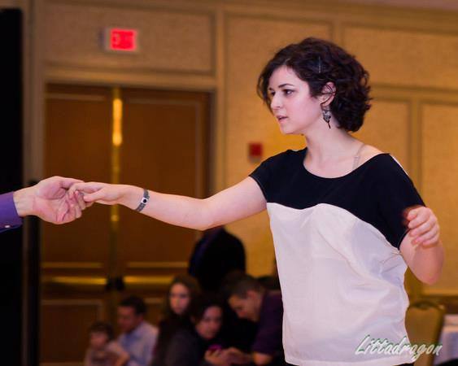
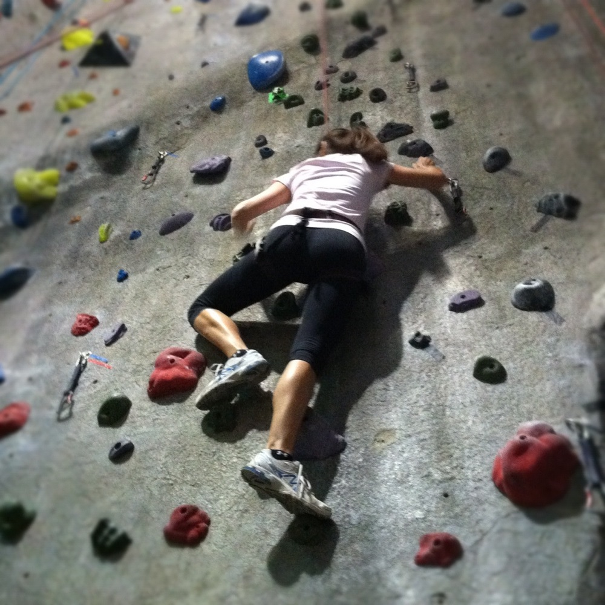
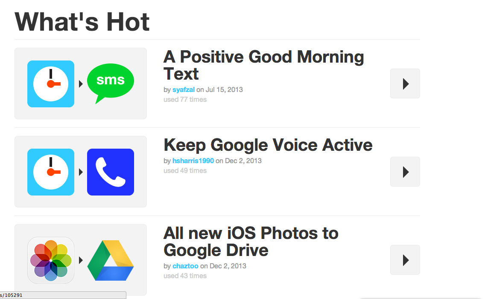

And here are some reasons why I'd be great for Launch Academy
I love learning. I'm excited by new things. I'm engaged and always asking questions, especially in a group environment. I'm really determined to learn this stuff.
It's so easy for some people to hit a wall and just give up immediately afterwards. I refuse to do that. There's always a solution out there somewhere, and I'm always turning problems over in my head. If I can't solve it at first, I'll file it away and try to find another angle.
I can pick up things quickly. Immersion in what I'm trying to learn is critical. If I'm spending my day living and breathing code, I'll be able to pick it up quickly and efficiently.
How I learn
Being immersed in the subject matter is important to me. I like devoting my energy towards one thing.
I'm a highly visual person, but I also thrive off of working with others and producing work. It's helpful to watch other people do things, but think for myself and figure out what I might reason though differently.
I like learning in a group environment because it allows for everyone to learn from each other. If there are twenty people in a room, we might all understand a subject slightly differently.
Why me?
I can give back to this environment in a big way. I'm always engaged and wanting to know more. I'm passionate about being able to change and create the material I want to see.
I'm specifically interested in becoming a developer because I'd like to be able to influence the things I use every day. I want to be able to fix small things and restructure larger ones. I like being able to build things from scratch.
I think I'd be a great addition to your program, and I'm looking forward to talking more about this with you soon!
Interesting Tidbits
In my spare time, when I'm not trying to learn everything I can get my hands on, I swing dance and I learn how to put together music into cool patterns. I've recently become interested in rock climbing as well!
 I've been really into this website recently
IFTTT
Really cool concept and the website itself is beautiful. It's fun to figure out the most useful things you can make.